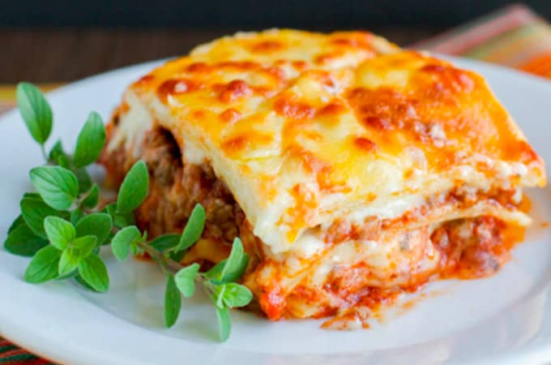

Lasagna

Lasagna Ingredients
- 2 teaspoons extra virgin olive oil
- 1 pound ground beef chuck
- 1/2 medium onion, diced (about 3/4 cup)
- 1/2 large bell pepper (green, red, or yellow), diced (about 3/4 cup)
- 2 cloves garlic, minced
- 1 (28-ounce)can good-quality tomato sauce
- 3 ounces tomato paste (half a 6-ounce can)
- 2 tablespoons chopped fresh oregano, or 2 teaspoons dried oregano
Method
- Put pasta water on to boil
- Brown the ground beef
- Cook the bell pepper, onions, garlic, add back the beef
- Transfer to medium sized pot, add tomatoes and remaining sauce ingredients to build the sauce
- Boil and drain the lasagna noodles
- Heat the oven to 375°F
- Assemble the lasagna